←
Field Testing
The following images and texts
showcase geotools and earth technologies in context and development.
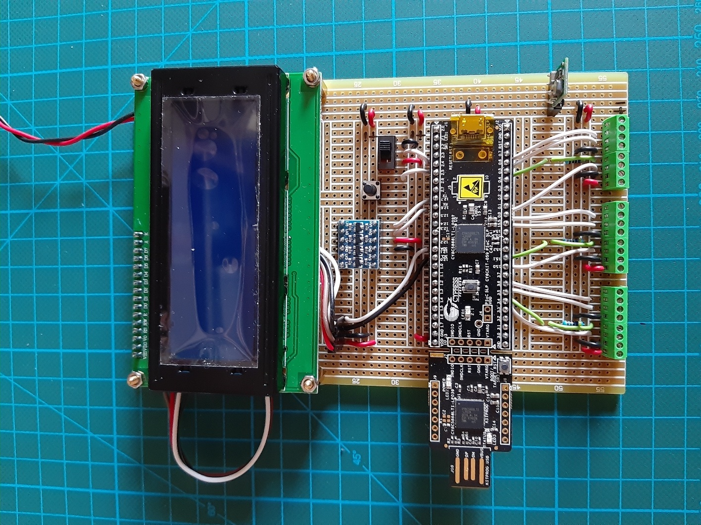
Third prototype for a 3-axis fluxgate with an audio-output.
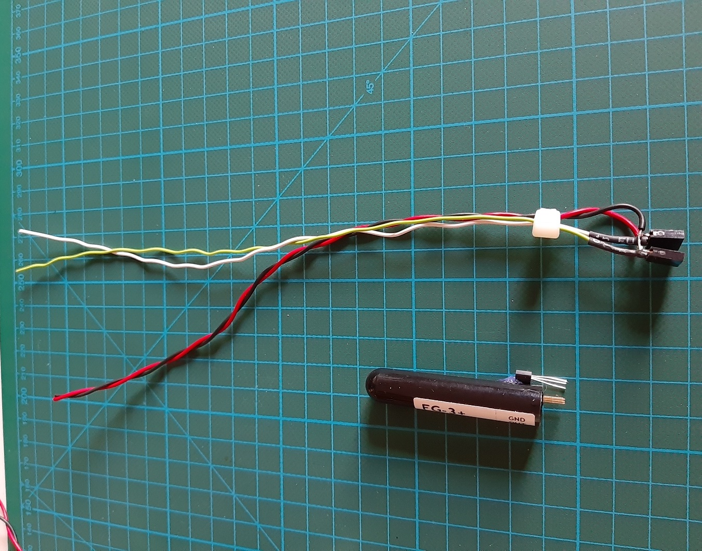
The Fluxgate has a temperature sensor attatched this time to control anomalies caused by the cold.
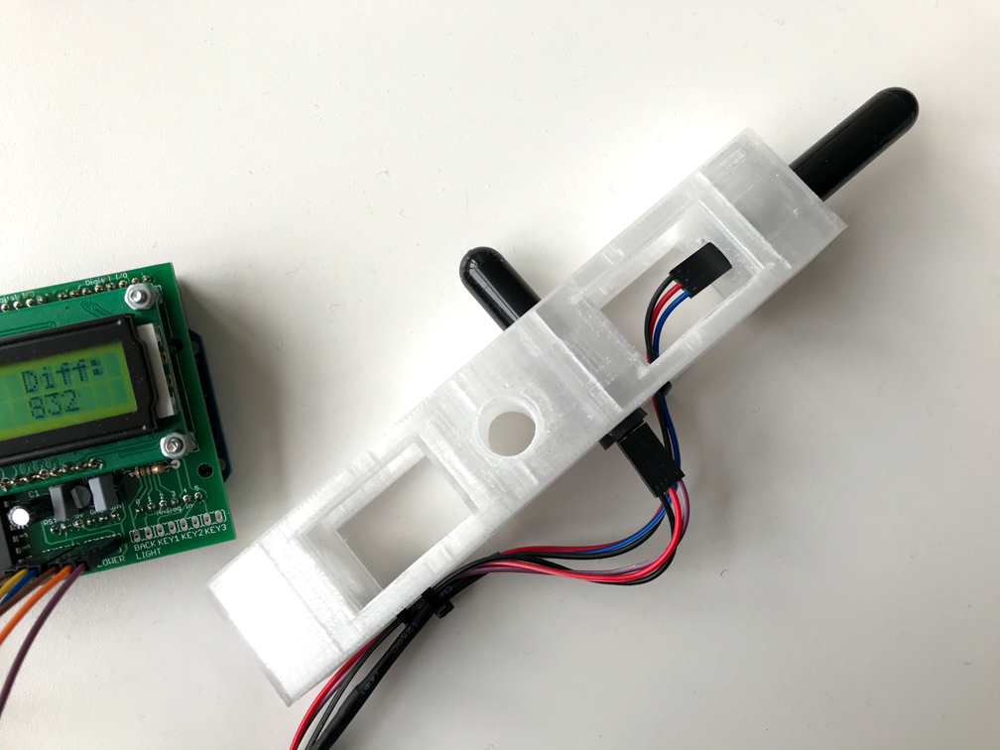
3D printed housing for two fluxgate sensors. One sensor points north, the other East. A third sensor will allow for a Z axis to be built in.
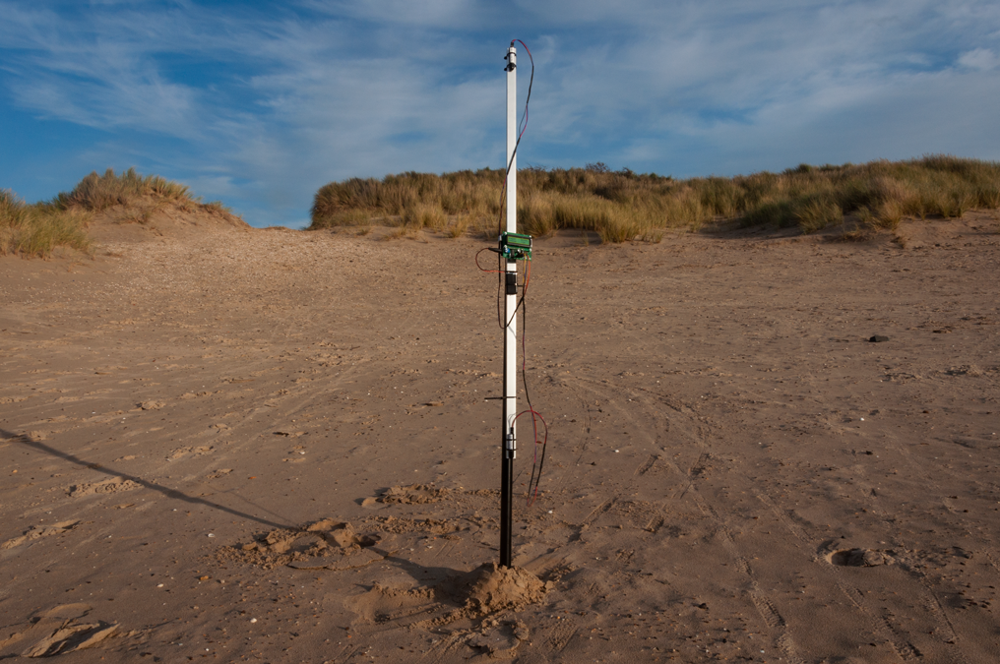
First field testing with Fluxgate geotool.
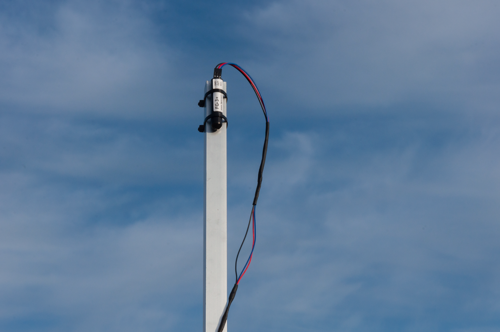
Upper Fluxgate sensor detail (FGM 3+)
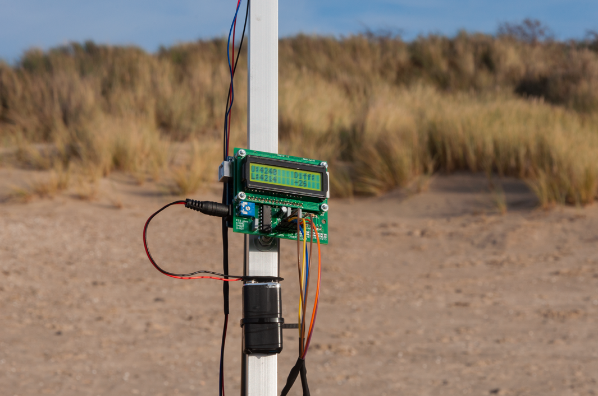
Magnetometer data logging. Upper sensor magnetic field is compared to lower sensor magnetic field.
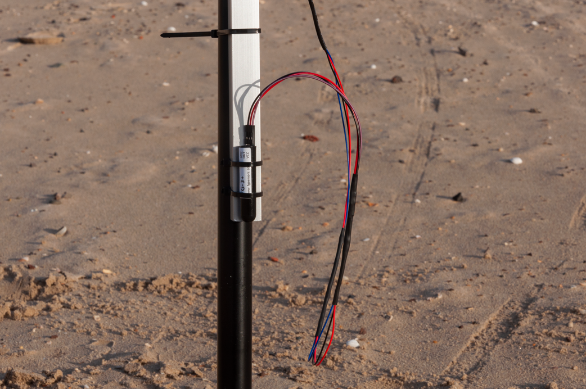
Lower Fluxgate sensor detail (FGM 3+)
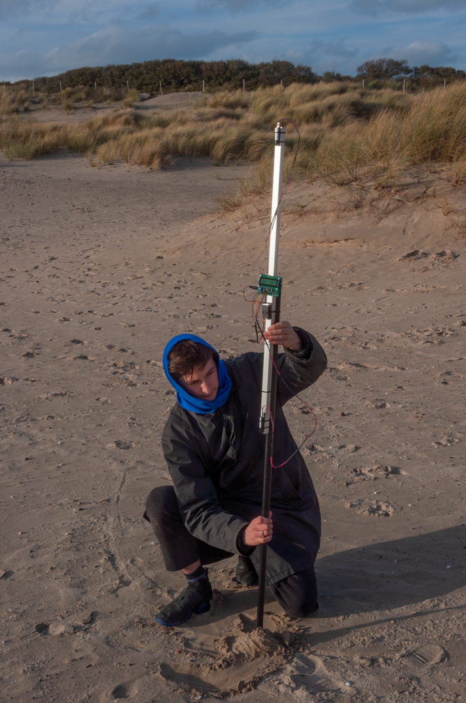
Installation of geotool into soft ground.
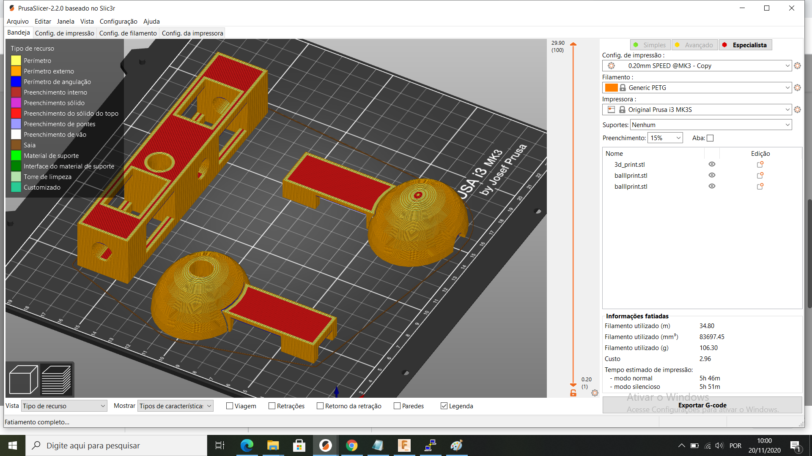
3D printing models for a new fluxgate setup. This time utilising a 3axis measurement – XYZ.
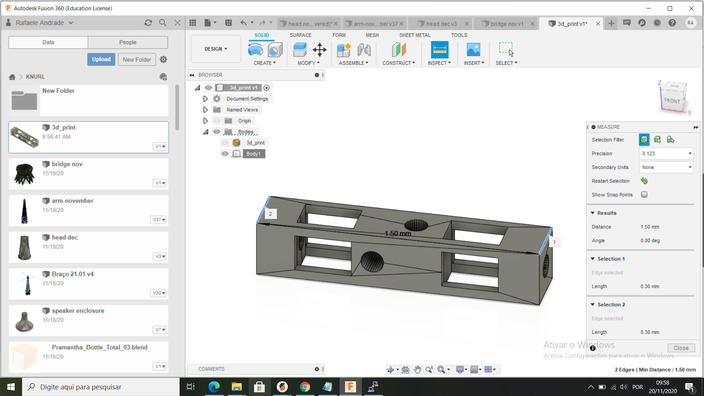
3D printing models for a new fluxgate setup. This time utilising a 3axis measurement – XYZ.
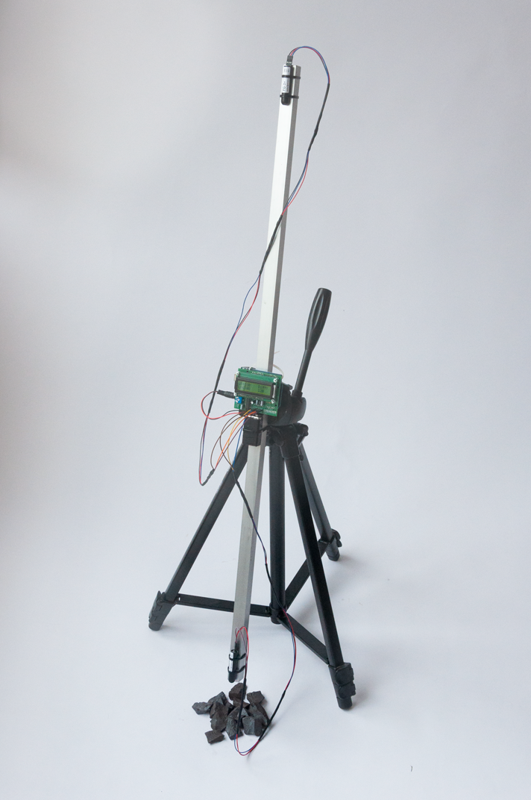
Prototype using two fluxgate sensors at 50cm distance. Portable device running on 9V. Current data output is geomagnetic field differece.
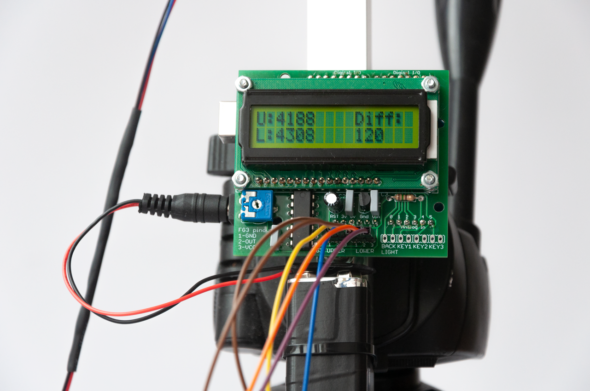
Prototype using two fluxgate sensors at 50cm distance. Portable device running on 9V. Current data out is geomagnetic field differece.